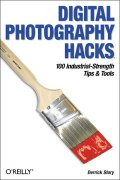

|  |
| About IR |
| Editors |
| Author instructions |
| Copyright |
| Author index |
| Subject index |
| Search |
| Reviews |
| Register |
| Home |
Derrick Story Digital photography hacks: 100 industrial-strength tips and tools. Sebastopol, CA: O'Reilly. 2004. xx, 309pp. ISBN 0-596-00666-7 $29.95 (£20.95)
Digital photography can now be said to have just about taken over from film. It is the novice's choice and enthusiastic amateurs have been switching ever since the definition could deliver good 10" x 8" prints, and professionals who can afford the top-end of the range now use digital cameras as a matter of course. However, digital photography is not just the province of the photographer—amateur or professional—digital photography is an essential feature of digital preservation strategies in libraries and other repositories of the national heritage.
Story's book is intended for anyone who uses a digital camera, whether local historian capturing a disappearing urban landscape or the professional capturing a battlefield scene. It is excellently designed and illustrated with colour photgraphs—all of them digital, presumably. And the author knows what he is talking about: he is a professional photographer and the quality of the pictures on his Website is high. I'm sure he won't mind me pasting an example of his work here. The point of light in the sky is the comet Hale-Bopp
Digital photography hacks is divided into eight chapters, which vary in their usefulness for the librarian or information manager turned photographer. Chapter 1, on Digital camera attachments, for example, will be of value to anyone who is faced with pretty well any kind of tricky assignment. There is advice here, for example, on the use of various tripods and bubble levels for ensuring that things are straight. Chapter 4 deals with flash topics and contains useful advice on such things as avoiding glare from reflective surfaces - useful if you have picture in your gallery that must be kept under glass, but that you want to appear on your Website and Chapter 6 will enable those who use Photoshop to do things they didn't know could be done.
The remaining chapters are likely to be of more value to the amateur photographer, rather than the amateur who must turn his or her hand to working for the library or museum. They cover tips for daytime and night-time photography; computer-related tips; using a phone-camera and Weekend photo projects..
This is a very useful compilation of tips, for amateur and expert alike. One of the problems, of course, is that particular products are inevitably American and whether any of them, or their equivalents, are available in Europe and other parts of the world is something that the enthusiast will need to discover.
Naturally, I can't lose the opportunity of putting in some additional pictures, since one gets so little opportunity with the journal! They are from, left to right, Italy, the UK and Spain
Professor T.D. Wilson
Editor-in-Chief
August 2004
How to cite this review
Wilson, T.D. (2004). Review of: Derrick Story Digital photography hacks: 100 industrial-strength tips and tools. Sebastopol, CA: O'Reilly. 2004. Information Research, 10(1), review no. R146 [Available at: http://informationr.net/ir/reviews/revs146.html]